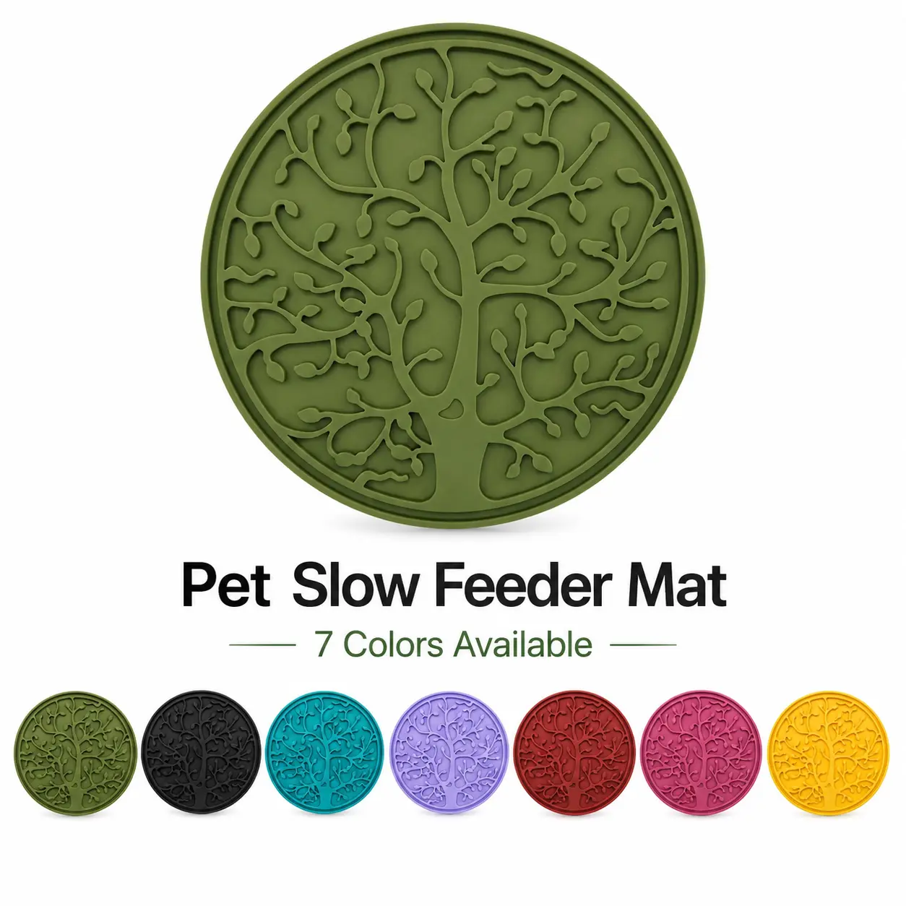
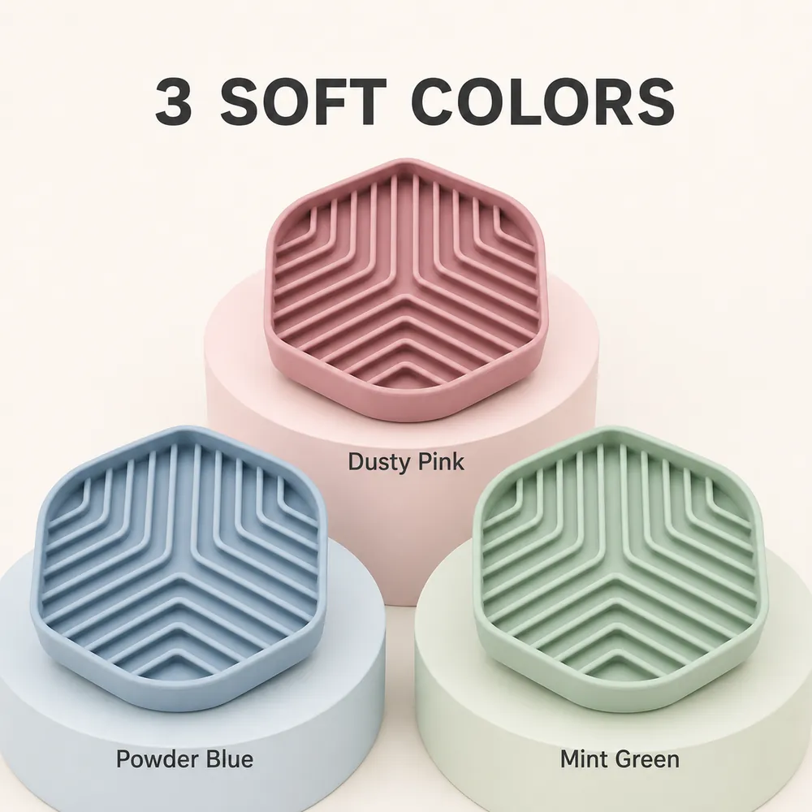
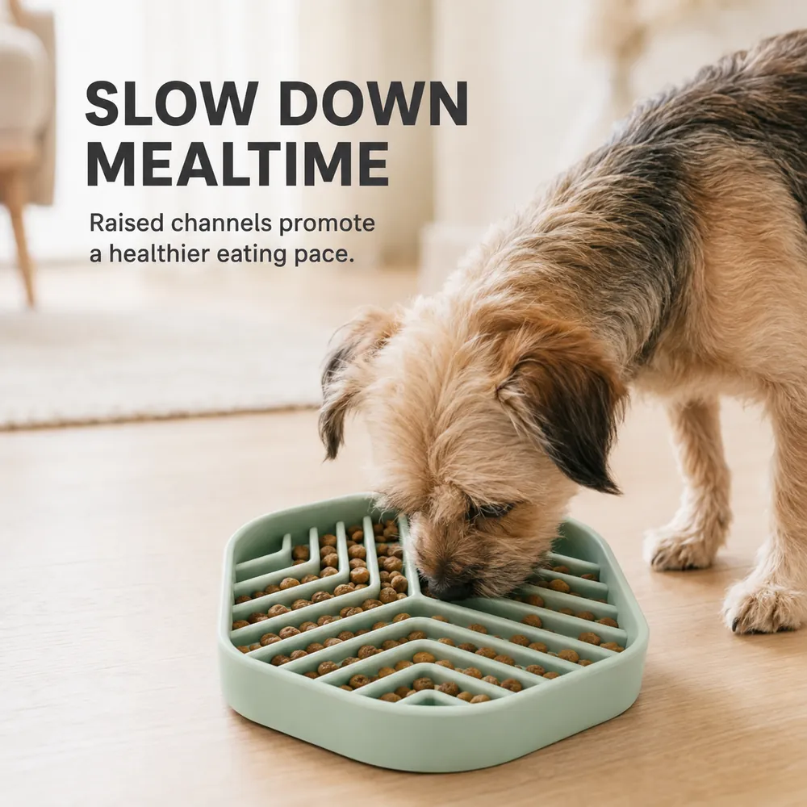
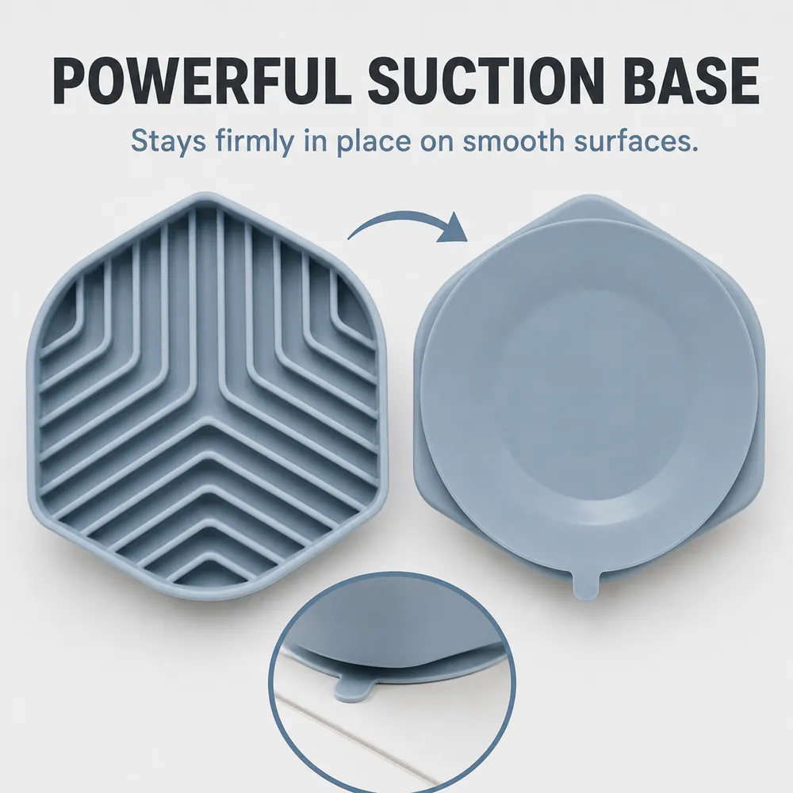
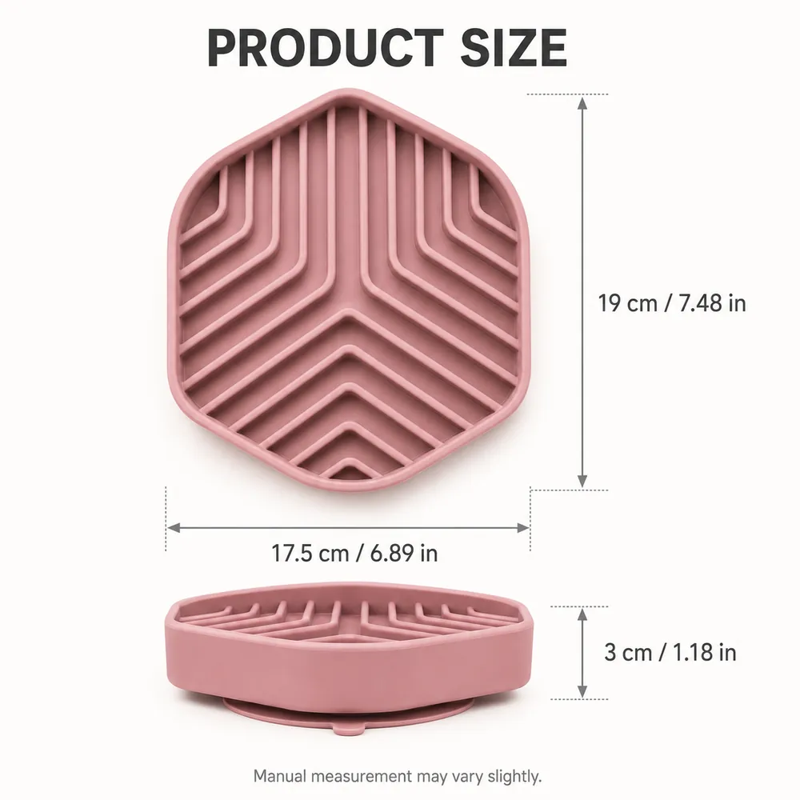
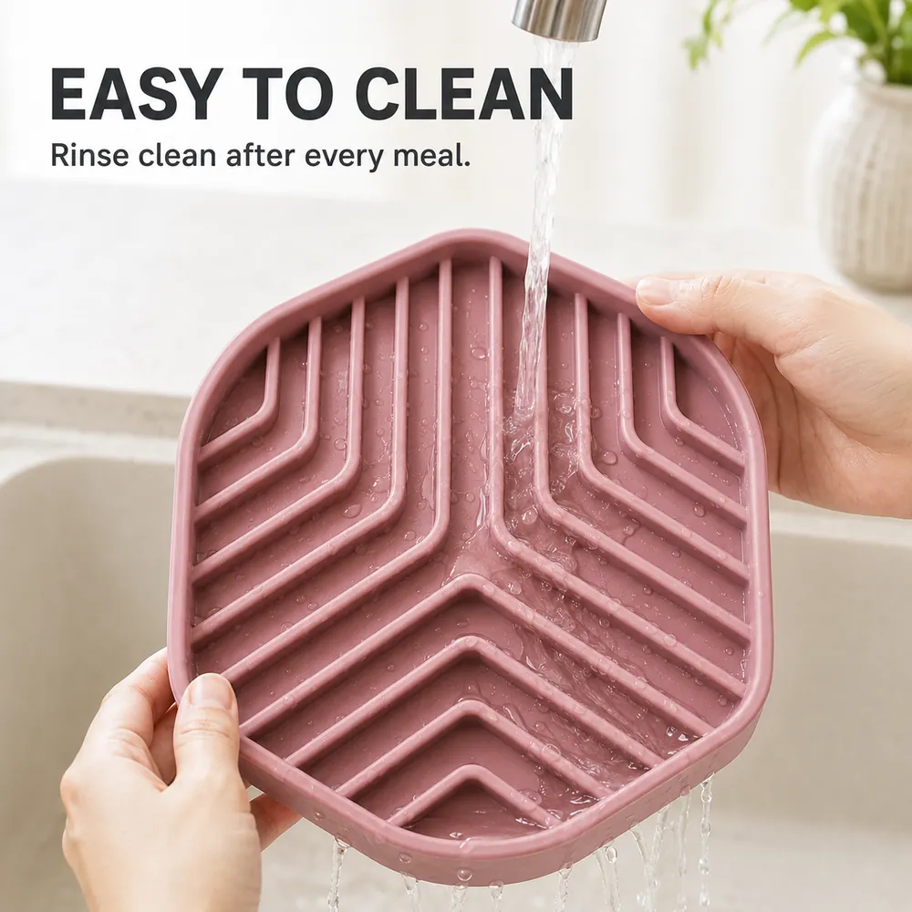
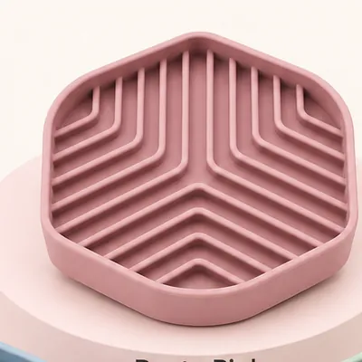
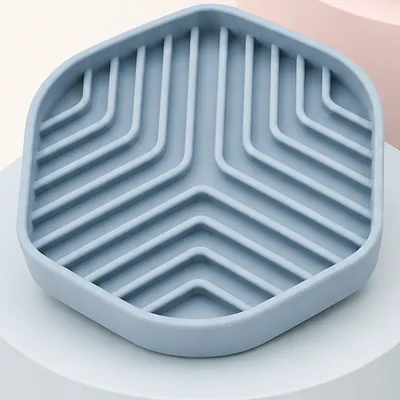
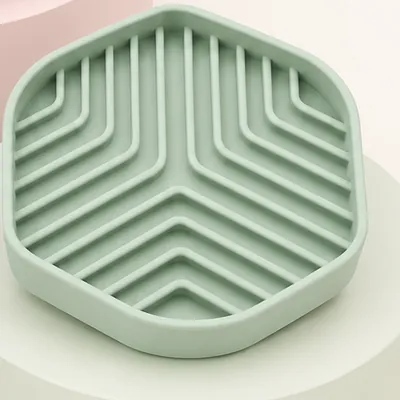

Tree-Pattern Round Slow Feeder Mat
Ø210mm · 7 colors · Suction base available · SKU QD-CP1050
View Product
Shield-Shaped Silicone Slow Feeder Mat
Request a Quote





Available in 3 colors: Dusty Pink, Powder Blue, Mint Green. Custom colors available for OEM orders.
| Material | Food-contact grade silicone (BPA-free) |
|---|---|
| Size | 190 × 175 × 30 mm |
| Weight | Approx. 305 g with OPP bag |
| Depth | 30 mm raised walls |
| Colors | Dusty Pink, Powder Blue, Mint Green |
| MOQ | From 10 pcs (stock colours) · custom colour or logo quoted on request |
| Sample Lead Time | Approx. 7 days |
| Production Lead Time | 15–25 days after sample approval |
| Customization | Logo, color, packaging available |
| Material reports | LFGB / FDA / REACH — silicone parts; reports on request |
| Design | Shield-shaped tray with raised chevron maze channels |
| Base | One large suction cup with a pull tab |
| Best For | Kibble, wet food and spreads; dogs and cats |
| Packaging | Individual OPP bag, 320 × 275 mm |
| Carton | 80 pcs · 53 × 40 × 38 cm · gross 25.4 kg |
| SKU | LM-012 |
The mat is a shallow shield-shaped tray with raised chevron channels running across the base. Kibble scatters into the channels and has to be nosed out one piece at a time; spreads sit on the ridges rather than in a flat pool. It suits both dry food and wet food, which is why the same mat covers a treat and a meal.
Instead of many small cups, the back carries one large suction cup with a pull tab. Press the mat down from the centre, and it holds on tiles, glass, stainless steel and polished stone. Lift the tab to release it. Carpet, wood grain and textured vinyl do not hold suction.
The rim stands 30 mm above the base, so wet food and yogurt stay inside the tray instead of running onto the floor. The footprint is 190 × 175 mm, which suits cats and small to medium dogs without taking over the feeding area.
The channels are rounded rather than square-cut, so food lifts out with a rinse or a short soak. Warm soapy water or the top rack of a dishwasher both work. Dry it before stacking it with other mats.
Stock colours are dusty pink, powder blue and mint green. Custom Pantone colours, embossed or printed logos and retail packaging are available for OEM orders. Sample lead time is about 7 days; production runs 15–25 days after sample approval.

Dusty Pink

Powder Blue

Mint Green
190 × 175 mm across with 30 mm walls, and about 305 g packed in its OPP bag. It suits cats and small to medium dogs.
One large suction cup with a pull tab holds it on smooth surfaces: tiles, glass, stainless steel and polished stone. Press from the centre to push the air out. Carpet and textured wood will not hold suction.
Both. The channels hold kibble; the ridges hold peanut butter, yogurt or wet food. It is a treat mat and a slow feeder in one piece.
Yes, on the top rack. Hand washing with warm soapy water works too, and the rounded channels rinse out easily.
From 10 pcs for stock colours. Custom colours, logo and packaging are quoted per order.

Ø210mm · 7 colors · Suction base available · SKU QD-CP1050
View Product
304×204mm · 7 colors · Suction base · SKU LM-018
View Product
S 15.5 cm · L 20 cm · 6 colors · suction base · SKU LM-004
View ProductGet wholesale pricing, request a sample, or discuss OEM customization — we reply within 12 hours.
Marvin Bai — Sales Manager
📧 marvin@szqidian.net
📱 +86 159 1412 0274
Shenzhen Qidian Electronic Technology Co., Ltd.